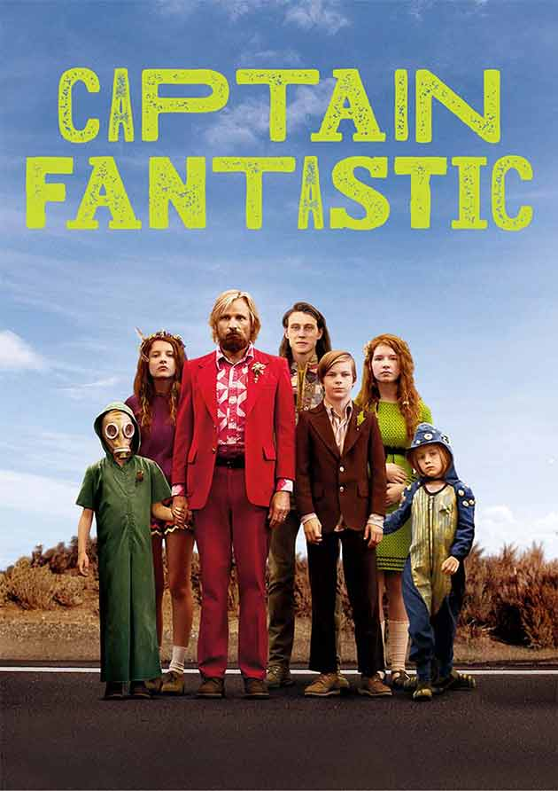

 Mrs Mulwray hires Detective Jake, who specializes in matrimonial cases, to spy on her husband, the builder of the city's water system. He finds himself in a web of deceit when Mr Mulwray dies.
Initial release: 20 June 1974 (USA)
Initial release: 28 December 2016 (USA)
Director:Roman Polanski
Production companies: Annapurna Pictures; Archer Gray; Modern People
Produced by: Robert Evans, C. O. Erickson
Nominations: Golden Globe Award for Best Motion Picture – Drama,